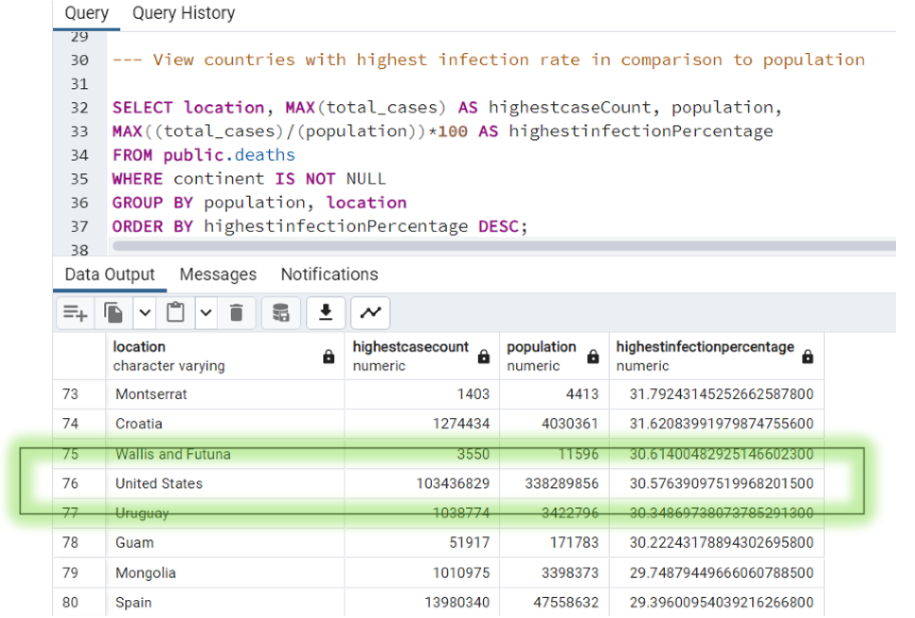
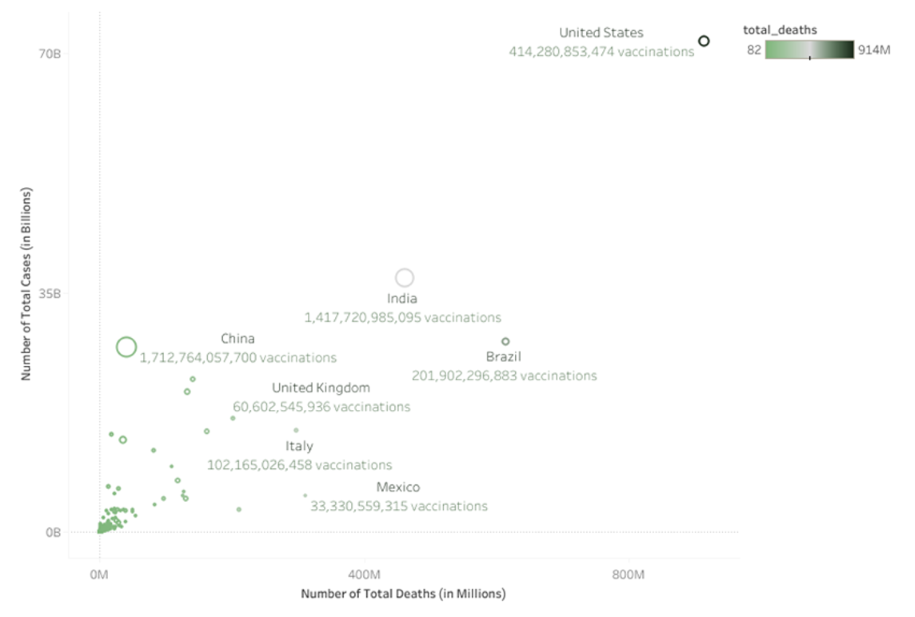
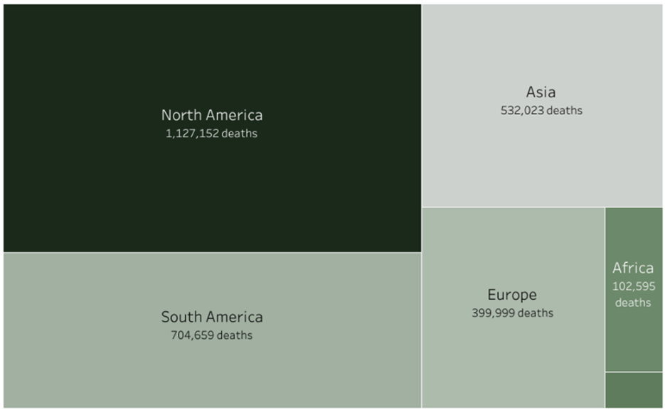
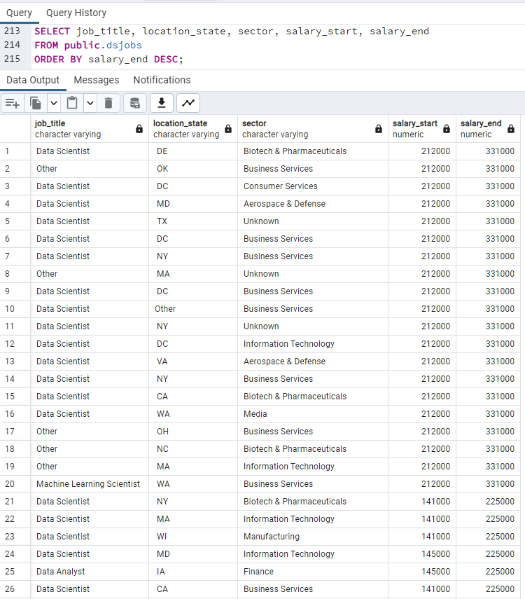

Alexa Fisher
Data Analytics, Data Science

Data Analytics, Data Science
Demonstrated prowess in predictive analytics by developing a robust regression model to forecast online purchasing behavior with an impressive accuracy rate of 88%. This innovative solution empowered e-commerce enterprises to identify and capitalize on revenue-generating opportunities, showcasing our ability to deliver tangible business outcomes through data-driven insights.
Project Link .
Skills / Duties: Data Preprocessing, Feature Selection, Statistical Analysis, Regression Modeling, Data Visualization, Hypothesis testing, and Interpretation
Tools: Python 
MS PowerPoint
Jupyter Notebook
Led a comprehensive exploratory analysis utilizing PostgreSQL to uncover the intricate facets of COVID-19's global impact. Leveraging advanced statistical techniques, I unearthed critical insights into infection rates, mortality trends, and vaccination dynamics. Findings, including identifying peak infection years and assessing case proportions within the United States, showcase my ability to extract actionable intelligence from complex datasets. This was further expanded with the use of Tableau to visualize the key metrics for readability.
Case Thesis: How has the Coronavirus Pandemic affected the global population?
The Coronavirus (COVID-19) pandemic has had a significant global impact, affecting nearly every country in the world. The virus has caused millions of deaths, disrupted economies, and changed the way we live our lives. There were multiple ways to evaluate the global impact based on cases, deaths, and vaccinations. All of these features were used in the exploratory analysis.
The following questions were investigated to provide key metrics.
We can see that 2022 leads the pack in overall infection cases. It had an overall total of over a billion new cases globally
As of May 2023, the total cases were 30.57% of the total population in the United States. This was the equivalent of about 103 million cases.
 Overall, the United States has the highest death count compared to other countries. It had the most cases and deaths, but not in vaccinations. The US trailed behind in vaccinations compared to other countries. For example, China had the most vaccinations, but the least number of deaths and cases. This could hint toward a correlation between the deaths and vaccinations.
Pioneered an advanced analytical approach to navigating customer churn dynamics, leveraging Python and Tableau to develop an interactive dashboard tailored to the strategic needs of stakeholders. By providing actionable insights into customer behaviors and retention strategies, our solution empowers organizations to drive sustainable growth and enhance customer satisfaction.
Case Thesis: Build an interactive dashboard for data analysis of a telecommunications company's customer churn.
The dashboard was presented to a panel consisting of the Senior Vice President of Customer Experience (SVP), the Executive Vice President of Sales (EVP), and an executive panel of regional Vice Presidents.
Each of these members had diverse needs in terms of the information they wanted to gain insight for:
The dashboard was designed to meet the needs of all stakeholders by providing a variety of filtering and visualization options. Stakeholders could filter the data by gender, state location, and internet service type. They could also view the data in a variety of visualizations, such as bar charts, stacked bar charts, and an interactive map. The dashboard was well-received by the stakeholders, who found it to be a valuable tool for understanding customer churn and developing strategies to improve retention.
 ; Tableau
; Tableau
Demonstrated expertise in data scrubbing by spearheading the refinement of Data Science job listings sourced from Glassdoor. Through meticulous attention to detail and proficiency in PostgreSQL, I streamlined job titles, eliminated redundancies, and rectified inconsistencies, transforming raw data into a valuable asset for strategic decision-making.
Case Thesis: What are the different types of Data Science jobs currently on the market and what are their salary ranges?
The increase in data science jobs is reflected in the growing importance of data analytics in driving business success and innovation across many industries, along with the continuous evolution of technology and workforce.
The field of data science continues to experience a significant surge in job opportunities, driven by several key factors:
The Data Scrubbing Process included the following steps:
In the realm of data science, there are several popular job titles that denote specific roles and responsibilities within the field. These titles include Data Analyst, Data Scientist, Data Engineer, Machine Learning Scientist, and Machine Learning Engineer. Each of these positions encompasses distinct skill sets and focuses within the broader domain of data science.
In addition to these popular job titles, there are other, less common roles within the data science landscape. These roles may encompass a wide range of responsibilities and may vary depending on the specific needs and objectives of organizations. Such roles often fall under the category of "Other" and may include titles like Business Intelligence Analyst, Data Architect, Software Engineer - Data Science, or AI Researcher.
Overall, these job titles represent the diverse skill sets and roles within the data science field, catering to the increasing demand for professionals who can harness the power of data to drive insights, innovation, and business success.
Salaries vary significantly based on factors such as experience, skill level, geographic location, and industry.
